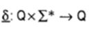
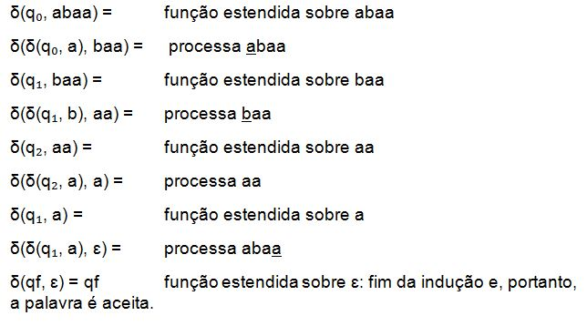

Definição da Função Programa Estendida
Seja M = {∑, Q, δ, q₀, F} um Autômato Finito Determinístico. A Função Programa Estendida denota por:

Considere o Autômato Finito M₁ = ({a,b}, {q₀,q₁q₂,qf}, δ₁, q₀, {qf}) definido no exemplo 1. Então, a função programa estendida aplicada á palavra abaa a partir do estado inicial q₀ é como segue:
